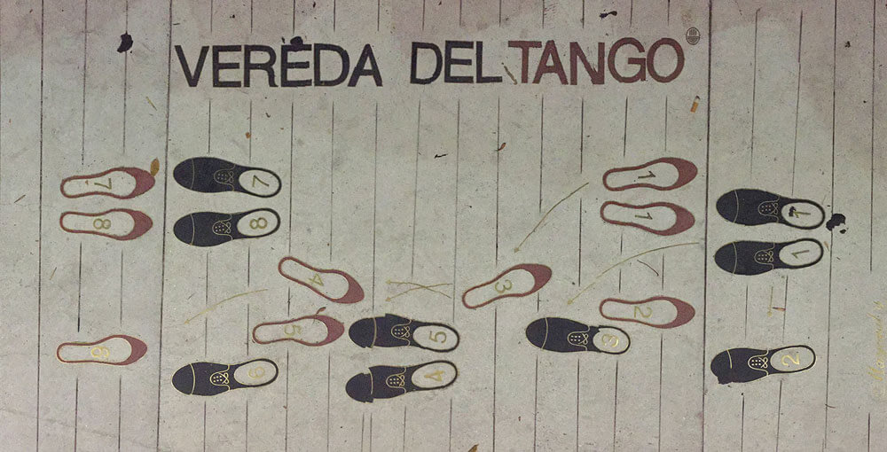

Tango: the dance that walks
What is tango? It's exactly this: "a dance that walks". I've taught at BE-TANGO in Brussels for 15 years, and every new student walks in expecting flashy acrobatics. Forget that. Everything we do on the floor—every figure, every single pause—is built entirely on the caminata. You drop your weight into one foot, then the other. You walk straight into the floor.
Walking is only half the conversation, though. The real magic hits when you stop. The parada. That absolute stillness between steps is where the electricity lives. If the orchestra plays something thick and dramatic, you milk that pause. When the rhythm sharpens, your steps shrink and bite. The music bosses your feet around.
Tango is a silent conversation between two bodies walking together.
Those high kicks you see on YouTube? Pure decoration. The actual connection is this game of walking, stopping, stretching the tension, and letting it snap. The feeling lives in the silence you create together.
Just listen. The bouncy, staccato beat of Mis Pesares by Edgardo Donato demands a totally different walk than the heavy, dark melancholy of Recién by Ricardo Tanturi. You physically cannot dance them the same way. The feeling dictates the walk.
Vals: lightness and circular movement
What is vals? It is continuous, circular movement. That driving 1-2-3 rhythm exists to sweep you across the floor. You drop the dramatic tango pauses completely. In vals, we never stop. We flow, we turn, we swirl.
Forget the heavy, grounded walk of tango. When I teach vals at our BE-TANGO studio, I give my students one unbreakable rule: use a quick little push on the 'one' of the 1-2-3 beat. That tiny impulse powers the whole dance. It gives you this incredible feeling of weightlessness, like you are skimming right over the floorboards.
You keep the exact same close embrace, but the energy shifts from the ground to the air. In my 15 years dancing in the Brussels scene, I've seen it a hundred times: people fall hard for vals first. That joyful momentum is wildly contagious.
Want to feel it right now? Play Pasión by Juan D'Arienzo, the undisputed king of rhythm. I dare you to sit still.
Milonga: speed and syncopated rhythm
What is milonga? Milonga is speed, syncopation, and pure mischief. It is the party. The whole character of this dance lives in the traspié contratiempo—a sharp, off-beat step that gives milonga its addictive kick.
You have absolutely no time for dramatic pauses here. Stop moving, and you'll cause a pile-up on the dance floor. Keep your feet skimming the wood, shrink your steps, and be ready to change direction in a split second.
Milonga is tango with a smile — quick, syncopated and full of mischief.
Tango breaks your heart; milonga makes you laugh. You have to listen sharply and keep your weight pitched forward. When my students finally nail the milonga rhythm at BE-TANGO, it instantly becomes their favorite part of the night at our local Brussels milongas. Every single time.
Test your ears. Get comfortable with the steady, walking groove of Milonga Sentimental by Francisco Canaro. Then, see if your feet can handle the lightning-fast tempo of Milonga del 83 by D'Arienzo.
The steps: the same, but different
Do you have to learn three entirely different dances? No. The basic steps are the same. Tango, vals, and milonga share the exact same vocabulary. You are learning one language and figuring out how to speak it with three distinct accents.
Naturally, certain steps belong to certain rhythms. A long, sweeping giro? Born for vals. A sharp, dramatic parada? Pure tango. Rapid, tiny syncopations? That is milonga. The music decides which words you use.
This is why my BE-TANGO classes always start with our ears. Before we even think about the embrace, you need to feel the orchestra. Is it tango? Vals? Milonga? Once your body knows the answer without you having to count the beat, you are actually dancing.

The emotional paradox: when joy hides sadness
Why do upbeat tango songs still feel so heavy? We call it the emotional paradox: the most cheerful rhythms usually hide devastating lyrics. If you actually listen to the words—las letras—they are pure heartbreak. We're talking lost love, deep nostalgia, and bitter regret.
That violent clash between a bouncing melody and gut-wrenching poetry gives tango its soul. Take a fast vals. You are flying around the room, feeling completely euphoric, while the singer is crying about absolute ruin. It is beautiful and tragic at the exact same time.
But that is the whole point of this dance. Tango is never just one flat emotion. It is joy, grief, passion, and loss shoved into a three-minute track. It is the reason we lace up our shoes and hit the Brussels dance floors night after night.